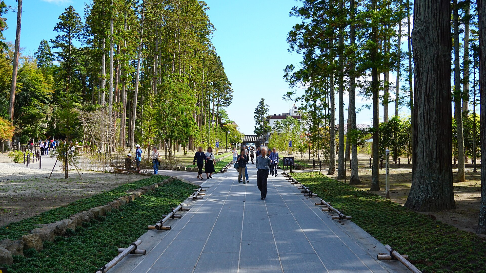

地
位置
東北在本州東北部，包含青森、岩手、宮城、秋田、山形、福島。從東京搭東北新幹線，仙台大約 90 分鐘，盛岡再往北一截。
東北在本州東北部，包含青森、岩手、宮城、秋田、山形、福島。從東京搭東北新幹線，仙台大約 90 分鐘，盛岡再往北一截。
10 月底到 11 月初是紅葉期。山寺、奧入瀨、盛岡城跡公園都會轉色。白天涼、溪谷更涼，外套要帶著。
D2 起用 JR EAST PASS 5 日券。はやぶさ全車指定席，有 PASS 也要先劃位。巴士與遊船另外預約。
奧羽山脈把東北分成太平洋側與日本海側。我們這次走的是太平洋這一側：宮城的松島、山形的山寺、岩手的猊鼻溪與盛岡、青森的奧入瀨與十和田湖。
本州最北。十和田湖、奧入瀨、蘋果與海峡都在這裡。
面積最大。盛岡、猊鼻溪、三陸海岸。
仙台是東北最大都市。松島是日本三景之一。
日本海側，稻米與NAMAHAGE 祭典。
藏王、山寺、蕎麥與芋煮。D3 會到山寺。
東北的南門。這次新幹線會穿過，不停留。
繩文時代東北就有大型聚落，青森的三內丸山是代表性遺跡。奈良、平安時期朝廷在這裡設多賀城，和當地的蝦夷（Emishi）有過很長的接觸與戰爭。
12 世紀，奧州藤原氏在平泉把這裡建成「北方的京都」，中尊寺金色堂現在是世界遺產。1189 年源賴朝滅了藤原氏，東北此後常被看成邊地，氣候嚴、人口少，卻留下很多寺社與祭典。
戰國到江戶，伊達政宗（獨眼龍）以仙台為根據地，重整城下町，也重修松島瑞巖寺。芭蕉 1689 年走「奧之細道」，松島與山寺都寫進了俳句。
2011 年東日本大地震重創三陸。松島灣因島嶼擋浪，市區受損相對較輕。旅行時放慢腳步即可。

D2 宮城縣
松島灣裡大約有 260 座大小島嶼，島上長著黑松，從平安時代就被寫進詩歌裡。它和京都天橋立、廣島宮島並稱日本三景。俳人松尾芭蕉走奧之細道時也來過這裡。

D3 山形縣
山寺正式名稱是寶珠山立石寺，西元 860 年由天台宗慈覺大師圓仁開山，是比叡山延曆寺的東北分寺。山門以上約有 1,015 階石階，沿途是杉林、石燈籠和小小的堂宇。

D4 岩手縣一關市
猊鼻溪是砂鐵川中游約 2 公里的峽谷，岩壁高 50 到 100 公尺，最深處的大猊鼻岩約 124 公尺。名字來自一塊像獅子鼻子的岩石。「猊」就是獅子的意思。這裡是國指定名勝，也列入日本百景。

D5 青森縣十和田市
奧入瀨溪流是十和田湖唯一的出水口，從子ノ口到燒山約 14 公里。火山岩上長滿青苔，溪水清澈，兩邊是山毛櫸與楓樹。米其林綠色指南給過兩顆星，是東北最有名的溪谷步道之一。